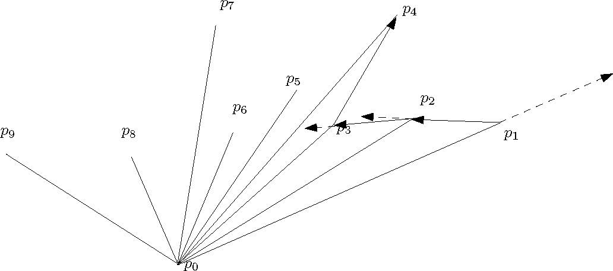

Today I first gave an introduction to this course.
At the beginning of this course, let us learn some basic stuff about algorithm analysis.
Before we analyze algorithms, let us learn how to describe an algorithm precisely. Instead of using "real" code, we use pseudocode to specify an algorithm. In a piece of pseudocode, we use the most clean and concise expressive method to describe a given algorithm. Sometimes, the pseudocode of an algorithm could even use an English sentence to describe a step of this algorithm. For example, if a complicated algorithm requires us to first sort the given input array, then we could write something like "sort the array A in ascending order using mergesort" as its first step. When writing pseudocode, we are not concerned with software engineering issues, such as data abstraction, modularity, and exception & error handling. Thus, pseudocode focuses on conveying the essence of an algorithm.
In this course, you are allowed to follow any convention of pseudocode that you prefer, as long as your pseudocode is readable and consistent. If you do not have any preference yourself, feel free to follow the way in which I write pseudocode, or the convention described in the textbook (Chapter 2).
Now, let's write down the pseudocode of insertion sort, which is a sorting algorithm taught in a previous course, before we analyze its running time.
INSERTION-SORT(A[1..N]) for j ← 2 to n key ← A[j]
i ← j - 1 while i > 0 and A[i] > key
A[i+1] ← A[i]
i ← i - 1
A[i+1] ← key
How to measure the running time of an algorithm? We may be tempted to use wall-clock time, but this is a bad measurement as it highly depends on the computer on which the algorithm is run. Hence, to analyze an algorithm, we need remove computer details such as processor speed, disk and memory, and one way of achieving this is to count the number of elementary operations only. The goal of algorithm analysis is to predict the resources required by an algorithm, and to do this, we need a machine model under which we express our algorithms, and some way of assigning costs of the operations under this model.
We analyze our algorithms under the random-access machine (RAM) model of computation. Algorithms are implimented as computer programs in a RAM.
A figure illustrating RAM:
In this machine model, there are unbounded number of local memory cells (words). An integer or a floating-point number can be stored in a memory cell. Program instructions are executed sequentially, i.e., one after another starting from the first to the last; there is no concurrency. The location counter indicates the instruction of the program that is currently being executed.
In this model, the time complexity (running time) is defined as the number of instructions executed, and the space complexity is the number of memory cells accessed.
The instruction set of RAM contains instructions commonly found in real computers, such as arithmetic operations (add, subtract, multiply, divide, remainder, floor, ceiling), data movement (load, store, copy) and control (conditional & unconditional branch). Each instruction uses 1 unit of time.
[Note: I didn't have time to talk about the following paragraph in Section 2 today, but I will talk about it in Section 2 on Friday] There are instructions in real computers that are not listed above. If your algorithm requires them, then make sure to make reasonable assumptions. For example, the exponentiation operation, i.e., computing x to the power of y, would require a numerical algorithm that is costly, and we would NOT assume that there is an instruction in the RAM that can perform this operation. On the other hand, when k is an integer <= the number of bits in a word, then 2k can be computed using a left shift. Thus we would assume that 2k is a constant-time operation.
[section 2 students need to finish reading the last paragraph of lecture 1 notes]
There are some limitations of the RAM, and more advanced models have been proposed to address these limitations. For example, to introduce concurrency to the RAM model, the PRAM model of computation was proposed. RAM does not consider memory hierarchy; to address this, models such as the external memory model were proposed. These are typically covered in graduate-level courses. To understand these models, a solid background of analyzing algorithms in the RAM is required. Furthermore, in many cases, algorithm analysis under RAM is sufficient. Thus, in this course, we mainly focus on RAM.
1. To analyze algorithms in RAM, we first need understand that the running time of an algorithm is expressed as a function of its input size. This is because the running time of an algorithm normally grows when the size of input grows. We choose reasonable parameters associated with the problem and use them as input size. For example, in sorting, the array size is the input size. In graph algorithms, we often choose the number of vertices and the number of edges as parameters.
2. The general steps of analyzing pseudocode are
3. To use this to analyze insertion sort, we first observe that each line of pseudocode can be implemented using a constant number of RAM instructions. Thus, we let ci be the cost of line i, which is a constant. Then, for each value of j in the outer loop, we let tj be the number of times that the while loop test in line 4 is executed. With these definitions, we have
INSERTION-SORT(A[1..N]) cost times 1 for j ← 2 to n c1 n 2 key ← A[j] c2 n-1
3 i ← j - 1 c3 n-1 4 while i > 0 and A[i] > key c4 ∑j=2,3,...,n tj
5 A[i+1] ← A[i] c5 ∑j=2,3,...,n (tj-1)
6 i ← i - 1 c6 ∑j=2,3,...,n (tj-1)
7 A[i+1] ← key c7 n-1
Now let's calculate the running time as a function of n:
")
This does not tell us much about the time complexity, as tj is not known and it depends on the actual input. The only thing that we can say about tj is that its value is between 1 and j (inclusive). To make sense of this function, let us see how the input affects the running time.
4. Best Case: In the best case, the input array A is already sorted, as this guarantees that tj is equal to 1. In this case,
T(n) = c1n + c2(n-1) + c3(n-1) + c4(n-1) + c7(n-1) = (c1 + c2 + c3 + c4 + c7) n - (c2 + c3 + c4 + c7)
This is a linear function of n, and thus we say the running time is Θ(n).
5. Worst Case: The case in which the input array A is reverse sorted is the worst case, as this guarantees that tj is equal to j. In this case,

This is a quadratic function of n, and thus we say the running time is Θ(n2).
6. Average Case: To perform the average-case analysis, we need assume that each of the n! permutations of A is equally likely. This is much more complicated, and if you are interested, you could read the following book (available in our library) to find out (not required):
The Art of Computer Programming, Volume 3: Sorting and Searching (2nd Edition), Donald E. Knuth.
If you intend to read this to enrich your knowledge, you could start by reading the discussions on inversions in the input array (5.1.1) and other properties of permutations in the same chapter, Before reading 5.2.1: Sorting by Insertion.
In this course, we mainly (though not always) concentrate on worst-case analysis. As pointed out by the textbook, there are many good reasons: Worst-case analysis gives an upper bound on the running time of the algorithm, guaranteeing the algorithm will not be more costly than the result of the analysis. In many practical applications, the worst-case happens very frequently. For example, when searching for records in a real database application, it is very often that the query would look for some key value that is not in the database. Finally, for many algorithms, the average-case running time is roughly as bad the their worst-case running time.
To appreciate the importance of good algorithm design, take the problem of sorting an array of SIN numbers for example. According to the data published by Statistics Canada, at the end of 2015, the population in Canada is roughly 34,880,000. We use this number as the value of n. Then, n2 is roughly 1015. Let's first throw away the constants in the analysis of insertion sort, and say this is the number of instructions required. If we use faster sorting algorithms whose cost is proportional to n lg n (in algorithms, lg n is log2 n), then for this input, lg n is roughly 25 and n lg n is roughly 109. If the CPU performs 1011 (100 billion) instructions per second, then insertion sort would require 104 seconds which are roughly 3 hours, while mergesort and heapsort would require 1/100 second. There is a big difference. In fact, the number of instructions of insertion sort should be a constant times n2, and if the constant is about 20, then it would require a long weekend. If you use mergesort/heapsort, then, even if the constant is 200, the sorting would be done in a matter of seconds.
Another thing to note is that, when presenting the result of analysis, we used Θ to throw away the constant factors. This is because we care about the order (rate) of the growth of the function that represents the running time, and we often care less about the coefficients. Asymptotic notation allows us to make more simplifying abstraction.
First, the definition:
Θ(g(n)) = {f(n): there exist positive constants c1, c2 and n0, s.t. 0 <= c1g(n) <= f(n) <= c2g(n) for all n >= n0}
Here we can say that g(n) is an asymptotically tight bound for f(n).
Observe that in the definition, Θ(g(n)) is defined as a set of functions. We however often abuse notation (acceptable here) and say f(n) = Θ(g(n)), and this means that f(n) ∈ Θ(g(n)). Sometimes this allows us to write shorter identities. For example, 20n2 + 13n + 1 = 20n2 + Θ(n) means 20n2 + 13n + 1 = 20n2 + f(n) and f(n) ∈ Θ(n)
Now, let's use the definition to prove that n2/2 + lg n = Θ(n2).
Proof. To prove this claim, we must determine positive constants c1, c2 and n0, s.t.
c1 n2<= n2/2 + lg n <= c2 n2
This is equivalent to c1 <= 1/2 + (lg n) / n2 <= c2
Setting c1 = 1/4, c2 = 3/4 and n0 = 2 would make this inequality hold (make sure that you do verify this).
There are also other choices of values of these constants that would guarantee the inequality, and in your proof, you just have to show the existence of one set, according to the definition.
Note that asymptotic notation applies to asymptotically positive functions only, which are functions whose values are positive for all sufficiently large n.
Definition: O(g(n)) = {f(n): there exist positive constants c and n0, s.t. 0 <= f(n) <= c g(n) for all n >= n0}
Following this definition, we can determine that n, n2, 3n2 + 4n + 5 are all O(n2), while n3 is not.
When we say that the running time of insertion sort is O(n2), we mean that the worst-case running time of insertion sort is O(n2). When we say that an algorithm runs in polynomial time, we mean that there exists a constant k, s.t. the worst-case running time of this algorithm is O(nk).
Definition: Ω(g(n)) = {f(n): there exist positive constants c and n0, s.t. 0 <= c g(n) <= f(n) for all n >= n0}
Based on the definitions, we have the following theorem: f(n) = Θ(g(n)) if and only if f(n) = O(g(n)) and f(n) = Ω(g(n)). For example, the statement n2/2 + lg n = Θ(n2) is equivalent to n2/2 + lg n = O(n2) and n2/2 + lg n = Ω(n2).
Some quick examples: n2, (lg n) n2, 4n2+5 are all in Ω(g(n)), while n is not.
Definition: o(g(n)) = {f(n): for any positive constant c, there exists a constant n0, s.t. 0 <= f(n) < c g(n) for all n >= n0}
This definition shows that f(n) grows more slowly than g(n).
Another definition of o-Notation is that f(n) = o(g(n)) if
lim f(n)/g(n) = 0
n→∞
By the definition of limits in calculus and the first definition of o-notation, we can see that these two definitions of little-oh are equivalent.
This second definition allows us to perform some quick analysis. For example, 2n = o(n2), but 2n2 ≠o(n2).
First, f(n) = ω(g(n)) if and only if g(n) = o(f(n)).
Formal definition: ω(g(n)) = {f(n): for any positive constant c, there exists a constant n0, s.t. 0 <= c g(n) < f(n) for all n >= n0}
Another definition using limits: f(n) = ω(g(n)) if
lim f(n)/g(n) = ∞
n→∞
Here I give some properties of order notation, which are not difficult to prove using definitions. Think about their correctness when reviewing these properties.
Here I give some tricks that are useful for comparing functions using order notation.
The first trick is that we can determine order notation by computing
lim f(n)/g(n) = c
n→∞
If the result, c, is 0, then f(n) = o(g(n)). If c = ∞, then f(n) = ω(g(n)). If 0 < c < ∞, then f(n) = Θ(g(n)), which also implies that both f(n) = O(g(n)) and f(n) = Ω(g(n)) hold.
Let us use this to prove the following claim: Let d be a nonnegative constant integer and a0, a1, ..., ad be constants, in which ad > 0. Let p(n) = Σc = 0, 1, ..., d (ai ni). Then p(n) = Θ(nd).
Proof. To prove this, we compute
limn → ∞ p(n)/nd = limn → ∞ (a0/nd + a1/nd-1 + ... + ad-1/n + ad) = ad.
Since ad is a positive constant, we claim that p(n) = Θ(nd). [end of proof]
8. Useful rules
There are some useful theorems for limits. Here I present them in a form based on the particular task of comparing two functions of complexity (running time, space, etc).
First, L'Hopital's rule:
lim (f(n)/g(n)) = lim (f'(n)/g'(n))
n→∞ n→∞
For example,
lim (ln n / n) = lim ((1/n) / 1) = 0
n→∞ n→∞
Thus ln n = o(n).
A more complicated example: Find out the relationship between f(n) = nn and g(n) = n!
Solution: By Stirling's approximation

we have

Therefore, f(n) = ω(g(n)).
Two other useful theorems:
1. If f(n) <= g(n) for all n > 0, then
lim f(n) <= lim g(n)
n→∞ n→∞
2. Squeeze Theorem: If h(n) <= f(n) <= g(n) for all n > 0, and
lim h(n) = lim g(n)
n→∞ n→∞
then
lim f(n) = lim g(n)
n→∞ n→∞
Using the squeeze theorem, we have an alternative, simpler approach that can prove n! = o(nn): Since
0 <= n! / nn = (1/n) (2/n) ... (n/n) <= 1/n
limn → ∞0 = limn → ∞(1/n) = 0
We have
limn → ∞(n! / nn) = 0
Finally, we can use the following property to break more complicated functions into simpler parts:
If f1 (n) = O(g1(n)) and f2 (n) = O(g2(n)), then
f1 (n) + f2 (n) = O(g1(n) + g2(n))
f1 (n) f2 (n) = O(g1(n) g2(n))
Let us use this property to show the relationship between (n3) (lg n)3 (lg lg n) and (n4) (lg n). First we have lg lg n = o(lg n). Thus, (lg n)3 (lg lg n) = o(lg4 n) = o(n). Therefore, n3 (lg n)3 (lg lg n) = n3 (o(lg4 n)) = o(n4) = o(n4 lg n).
I will now start talking about algorithm design. Before discussing each algorithm design paradigm, I will show different algorithmic solutions to the maximum subrange sum problem, to show good algorithm design is essential.
In this problem, the input is an array x of n possibly negative integers. The output of the algorithm for this problem is the maximum sum found in any subarray (possibly empty) of the input.
In the following example, n = 10 and the content of x is: 31, -41, 59, 26, -53, 58, 97, -93, -23, 84. The output is the sum of the subarray x[3..7], which is 187.
To understand this problem better, let us consider some special cases. First, if all the entries are positive, then the subarray with maximum sum is the entire array x. Second, if all the entries are negative, then the answer is 0, which corresponds to an empty subarray.
I described in class that this abstract problem is from practice.
In a brute-force solution to this problem we enumerate all possible subarrays, compute the sum of each of them and return the maximum.
In the pseudocode below, make sure to distinguish the letter l and the digit 1:
maxsubrangesum1(x[1..n])
max ← 0 for l ← 1 to n do for u ← l to n do
sum ← 0
for i ← l to u do sum ← sum + x[i] if sum > max then max ← sum return max
To analyze the running time, we need find out the number of times the statement in the innermost loop is executed. An upper bound would be n3. With this it is not difficult to show that the running time is O(n3). With greater care, we can show the running time is Θ(n3).
To improve the running time, we observe that in the previous solution, we perform a lot of recomputation in the innermost loop. For the example given before, to computer the sum of the subarray x[3..5], we do a loop to get the result 32. Then, in the next iteration, we compute the sum of x[3..6], again using a loop. We can however easily compute x[3..6] as x[3..5] + x[6].
We can formalize this observation using the following equation: sum of x[l..u] = sum of x[l..u-1] + x[u].
maxsubrangesum2(x[1..n])
max ← 0 for l ← 1 to n do sum ← 0 for u ← l to n do
sum ← sum + x[u] if sum > max then max ← sum return max
The running time is Θ(n2).
We describe another Θ(n2)-Time Solution, not because it is more efficient than solution 2, but because it makes use of a standard trick which is good to know.
In this solution, we first precompute the prefix sum array p[0..n], in which p[i] = x[1] + x[2] + ... + x[i], and p[0] = 0 (sum of the empty prefix). We can perform one loop to compute all the entries of p in O(n) time. With this, the sum of x[l..u] can be computed using x[l..u] = p[u] - p[l-1].
maxsubrangesum3(x[1..n]) p[0] ← 0 for i ← 1 to n do p[i] ← p[i-1] + x[i]
max ← 0 for l ← 1 to n do for u ← l to n do
sum ← p[u] - p[l-1] if sum > max then max ← sum return max
We learned divide-and-conquer when we learned mergesort in a previous course. Now let's apply this idea here.
Our algorithm breaks x into two halves. We can then find the maximum subrange sum in each half in recursive manner. After this, we still need consider subranges that straddle the midpoint. A useful observation is that among these ranges, the one with the maximum sum consists of a maximum-sum suffix of the left half of x, and a maximum-sum prefix of the right half of x. We can construct a proof by contradiction for this.
This gives us the following solution; note that we first need a recursive algorithm which solves this problem for array x[l..u].
maxsubrangesum4(x, l, u)
if l > u then
return 0
if l = u then
return max(0, x[l])
m ← ⌊(l+u)/2⌋ // midpoint
suml ← 0 // keep track of the sum of the suffixes of x[l..m]
maxleft ← 0
for i ← m downto l do
suml ← suml + x[i]
maxleft ← max(maxleft, suml)
sumr ← 0 // keep track of the sum of the prefixes of x[m..u]
maxlright ← 0
for i ← m+1 to u do
sumr ← sumr + x[i]
maxright ← max(maxright, sumr)
maxa ← maxsubrangesum4(x, l, m)
maxb ← maxsubrangesum4(x, m+1, u)
return max(maxa, maxb, maxleft+maxright)
To use this recursive algorithm to solve the maximum subrange sum problem, call
maxsubrangesum4(x, l, n)
Let T(n) be the running time. Then we can express T(n) using the following recurrence:
T(n) = T(⌈n/2⌉) + T(⌊n/2⌋) + n if n > 1
T(n) = 1 if n = 1
To solve it, we can assume n is a power of 2, which guarantees that the left and right half arrays are of the same size. This is a typical and reasonable assumption. Then, it is not difficult to see the running time satisfies T(n) = 1 if n = 1 and T(n) = 2 T(n/2) + n if n > 1. This recurrence is the same as the recurrence for the running time of mergesort, so the running time of our algorithm is also O(n lg n) (later we will learn how to analyze running time given recurrences).
Suppose that we have found the maximum subrange sum for x[1..j-1]. To find it for x[1..j], there are two cases.
In the first case, the subrange with the maximum sum lies entirely within x[1..j-1]. In this case, we already know the answer.
In the second case, this subrange ends at x[j]. This means, for this case, we have to find the maximum suffix sum of x[1..j]. If we already know the maximum suffix sum of x[1..j-1], we can add x[j] to that sum. If the result is positive, then it is the maximum suffix sum of x[1..j]. Otherwise, we take 0 as the maximum suffix sum of x[1..j], which corresponds to the empty suffix.
The above reasoning gives us a solution that is based on a linear scan of the array, keeping track of the maximum subrange sum and maximum suffix sum in the portion of the array seen so far.
masubrangesum5(x[1..n])
maxsofar ← 0 //keep track of the maximum subrange sum in the portion of the array seen so far maxsuffixsum ← 0 //keep track of the maximum suffix sum in the portion of the array seen so far
for i ← 1 to n do maxsuffixsum ← max(maxsuffixsum + x[i], 0)
maxsofar ← max(maxsofar, maxsuffixsum)
return maxsofar
This example requires only O(n) time.
From these five solutions, we can see that good algorithm design techniques are essential. The following are eight algorithm design paradigms
The first algorithm design paradigm that we will discuss is "reduce to known problem". This is to develop an algorithm for a problem by treating this problem as a special case of a problem that we already know how to solve efficiently. For most of the examples that we will see here, we reduce the problems to sorting, which we know how to solve in O(n lg n) time (e.g., mergesort, heapsort).
Let's apply this paradigm to solve some problems.
This problem asks us to determine whether the elements in a given array of n numbers are distinct.
Solution 1: A brute-force solution is to compare each element to every other element, and this solution requires a double loop. There are n choose 2 pairs of elements to compare. The running time is O(n2).
Solution 2: Sort the n numbers, and then we walk through the sorted array, comparing each element with the one immediately to its right. If we find any element that is equal to the element immediately to its right, then we have found a repeated element. If not, then the numbers are distinct. Since sorting requires O(n lg n) time and the computation after sorting requires O(n) time, this solution uses O(n lg n) time.
It is worth mentioning that the lower bound of the element distinctness problem is Ω(n) in the comparison-based model. What does this mean? To understand this, let's first learn what a comparison-based model is, and then what is the lower bound of a problem. Under the comparison-based model, algorithms can only perform arithmetic calculations and comparisons. They are forbidden to use the value of the input as addresses of memory cells. The above claim about lower bound means that any algorithm that solves this problem in the comparison-based model requires Ω(n lg n) time in the worst case. How to prove this is out of the scope of an introductory course to algorithms, but it is worth knowing the result.
Solution 4: This solution is for a special case in which we know that the input values are relatively small integers between 1 and M. In this case, we can make an array B[1..M], and initialize all its entries to 0. Then we scan x, writing a 1 in B[i] if we encounter i during the scan. Before writing, we check if B[i] has a 1 in it already, and if it does, then we have found a repeated element.
This requires O(M+n) time and O(M+n) space, and it is good if the numbers are small, e.g., M = O(n).
Exercise: how to modify our approach so that we need not initialize the entries of B to 0?
In this problem, we are given two sets of integers (represented as two arrays), and each set is of size n, and we compute the intersection of these two sets.
Solution 1: A naive approach is to loop through one array, checking to see if any of its elements is contained in the other. Again, this requires O(n2) time.
Solution 2: Sort the first array. Then we loop through the second array, and for each element in the second array, we find out whether it exists in the first array using binary search. This requires O(n lg n) time.
In this problem, we are given n points in the plane, and we are to find out whether there are three points that are collinear, i.e., lie along the same line.
Solution 1: For each triple of points, say P1 = (x1, y1), P2 = (x2, y2) and P3 = (x3, y3), compute the slopes of the line connection P1 with P2, and the line connecting P1 with P3. If they are equal, then these three points are collinear. We can easily write a loop of three levels to check each triple exactly once. There are n choose 3 triples, and this require Θ(n3) time.
Solution 2: For each point P, compute the slope of each line defined by P and another point in the given set of points. If there is a duplicate element among all these slopes, then there are collinear points. This way we have reduced the problem of finding whether there is a triple of collinear points involving P to the element distinctness problem. Thus this algorithm runs in O(n2 lg n) time.
Note that no one knows whether the problem of collinear points can be solved in O(n2) time, and thus our second solution is quite efficient.
In this problem, we have a set, Q, of points in the plane, given by the x- and y-coordinates of these points. We would like to compute the convex hull of this point set, i.e., the smallest convex polygon P for which each point in Q is either on the boundary of P or in its interior.
Since the points in Q could possibly lie along the boundary of P, it is not difficult to see that all the vertices of P are in Q.
One way of "computing" the convex hull is to bang nails into a board at the positions where the points are located, put an elastic rubber band around all the nails, and then let go. The law of physics will do the computation and define the convex hull using the rubber band.
This problem has many applications in computer graphics and CAD. Many programs compute the convex hull of a complicated shape, and use it to determine whether the user's mouse clicked on it.
To study the solutions to convex hull, let's first learn some background knowledge in geometry.
Polar angle: The polar angel of a point p with respect to the origin point p0 is the angle from the x-axis through the origin to the point p0, rotating counter clockwise.

In the above example, θ is the polar angle of p with respect to p0.
Compute the angle between two directed line segments: Let u and v be the vectors representing two directed line segments whose starting endpoints are the the origin point p0. How do we compute the angel, θ, between u and v?
We can use the following equation to compute θ: u⋅v = ||u|| ||v|| cos θ. Here the dot is the dot product of two vectors. Say, u = (x1, y1) and v = (x2, y2), then u⋅v = x1x2 + y1y2, and ||u|| is the length of u.
Note that we cannot assume arc cos or square root to be a constant-time operation supported by RAM. However, in many algorithms, we just have to compare two angles without computing their actual degrees. Thus, since this equation allows us to compute (cos θ)2 in constant time, we can make use of it to compare two angles in constant time.
Before introducing our algorithms for convex hull, let's make a simplifying assumption that no three points in the input point set are colinear. This is a common assumption; it is not difficult to modify our algorithms to handle the special cases in which there are colinear points (and yes, these special cases should be taken care of in actual implementation), and we make this assumption so that we can focus on explaining algorithmic ideas.
A naive approach is to consider the line joined by each pair of points, p1 and p2. Then, if all the other points are on the same side of this line, then the line segment between p1 and p2 is an edge of the convex hull.
How do we test if all the other points are on the same side of this line? One way of doing this is to first determine the equation of the line, say, Ax+By+C = 0. Then, substitute the coordinates of each of the other points into the left hand side. If the signs of the results are the same, then all the other points are on the same side.
It is not difficult to see the correctness of the algorithm, but the running time is O(n3). Can we do better?
5. Jarvis's March (Gift Wrapping): A better algorithm of computing convex hull is Jarvis' march. It is also called gift wrapping as its computational process is similar to the process of wrapping a gift: start from an extreme point and wrap it tightly using a piece of paper.
The algorithm is
If the convex hull has h vertices, then the running time of this algorithm is O(nh), since it uses O(n) time to "march" from one vertex of CH(Q) to the next and there are h vertices. This is O(n2) in the worst case.
6. Graham's Scan: During Jarvis's march, we repeatedly look for the smallest polar angles all the way, so can we just reduce the problem into sorting by polar angle? It is not as simple as this, since we keep changing origin points. The Graham's scan algorithm still manages to reduce it to sorting, in a subtle way. It has the following steps:

The pseudocode for Step 3 is
s ← an empty stack
PUSH(p0, S)
PUSH(p1, S)
PUSH(p2, S)
for i ← 3 to n-1 do
while the angle formed by points NEXT-TO-TOP(S), TOP(S), and pi makes a nonleft turn then
POP(S)
PUSH(pi, S)
return S
In the next lecture, I will talk more about this piece of pseudocode and then analyze the running time.
To analyze the running time of Graham's scan, it is easy to see that Step 1 requires O(n) time and Step 2 requires O(n lg n) time. Step 3 is not obvious. In Step 3, all the lines excluding the while loop requires O(n) time in total. To bound the cost of the while loop, it suffices to find out how many times the POP operation is executed. To find this out, observe that each point is visited at most twice in the pseudocode for Step 3: once when we add it to CH(Q) using PUSH, and possibly the second time when we discard it using POP. Thus the number of times that POP is executed is at most the number of points. Therefore, Step 3 requires O(n) time. The overall running time of Graham's scan is thus O(n lg n).
We learned divide-and-conquer in previous courses, and we will learn more about it in this course. The general steps of divide-and-conquer are
In this course, we have already seen an example: the 4th solution to the maximum subarray problem. Let T(n) be the running time of that algorithm. Then we can express T(n) using the following recursive formula:
T(n) = T(⌈n/2⌉) + T(⌊n/2⌋) + n if n > 1
T(n) = 1 if n = 1
To analyze the running time, assume, for simplicity, that n is a power of 2 (I will explain why this is a reasonable assumption). Then T(n) = 2T(n/2) + n if n > 1.
The first approach that I will use to solve the recurrence is called iteration. The idea is to plug the right-hand side of the equation repeatedly into the left-hand side.
Assume that n = 2k. Then we have
T(2k) = 2T(2k-1) + 2k
2T(2k-1) = 4T(2k-2) + 2k
...
2k-1T(2) = 2kT(1) + 2k
After summing all these equations, we have T(2k) = 2k + k 2k = 2k(k+1)
Therefore, T(n) = n(lg n + 1) = O(n lg n).
Now, let's discuss why it is OK, in the analysis of the running time of mergesort, to make the simplifying assumption that n is a power of 2. Even if n is not necessarily a power of 2, we still have the following equation:
T(n) = T(2lg n) <= T(2⌈lg n⌉) = 2⌈lg n⌉(⌈lg n⌉ + 1) < 2lg n + 1 (lg n + 1 + 1) = 2n (lg n + 2) = O(n lg n)
Therefore, in such recurrences, we normally ignore floor and ceiling when we solve them to compute the running time.
Next, let's using a different approach, namely the substitution method, to analyze running time. Study the following table
n 1 2 4 8 16 32
T(n) 1 4 12 32 80 192
T(n)/n 1 2 3 4 5 6
We can guess that T(n)/n = k + 1, where n = 2k.
Thus, our guess is T(2k) = (k+1)2k.
Now let's prove it by induction. Clearly it is true for k = 0. Assume it is true for k; we will prove it for k+1. We have
T(2k+1) = 2T(2k) + 2k+1 = 2(k+1)2k + 2k+1 = (k+2)2k+1
In this problem, we are given two n-bit numbers, and we are to compute the product of these two. Naturally, this makes sense if n is so large that these numbers do not fit in a word. Thus, an array of n entries are used to store the n bits in each of these numbers.
If we design an algorithm based on the pencil-and-paper method, it would require O(n2) time. Now let's see if we can make any improvement using divide-and-conquer.
Let X and Y be the two input n-bit numbers. Assume that the n bits representing X is the concatenation of A and B, and the n bits representing Y is the concatenation of C and D, where A, B, C and D are n/2-bit numbers. If we are to write down pseudocode, we can use arrays of 0/1 digits to represent X, Y, A, B, C and D.
Solution 1: This solution is based on the following equation:
XY = (A 2n/2 + B) (C 2n/2 + D) = (AC) 2n + (AD + BC) 2n/2 + BD
This immediately suggests the following idea of doing divide-and-conquer: First, perform four multiplications to compute AC, AD, BC, and BD. That is, solve 4 subproblems of size n/2. Then, use the solutions to these subproblems to compute XY; to do this, we simply perform additions and multiplications by 2n (or 2n/2), and these multiplications can be performed by appending 0 bits. Thus, we have the following recurrence on running times:
T(n) = 4T(n/2) + cn if n > 1, and T(n) = c if n = 1. c is a constant here.
We use the iteration approach again.
T(2k) = 4T(2k-1) + c 2k
4T(2k-1) = 16T(2k-2) + 4 c 2k-1
...
4k-1T(2) = 4kT(1) + 4k-1 c 2
When we sum up, we get T(2k) = c 4k + c (2k + 2k+1 + ... + 22k-1) = c 4k + c (4k - 2k)
Thus T(n) = (c + c) n2 - cn = O(n2).
Thus this solution does not achieve any improvement compared with the pencil-and-paper solution.
Solution 2: Karatsuba's algorithm
The second solution is based on the following equation
XY = (2n + 2n/2) AC + 2n/2 (A-B)(D-C) + (2n/2 + 1) BD
You can easily verify the correctness of this equation by expanding it.
If we design a divide-and-conquer approach based on this equation, we just have to solve 3 subproblems: the computation of AC, (A-B)(D-C) and BD. Thus the running time is
T(n) = 3T(n/2) + cn if n > 1
T(n) = c if n = 1
We can prove this by induction (left as an exercise): T(2k) <= c(3k+1 - 2k+1).
First I talked about the midterm exam.
Then, we have
T(n) <= c(3lg n + 1 - 2lg n +1) = c(3⋅3lg n - 2⋅2lg n) = c(3 nlg 3 - 2n) = O(nlg 3).
Since lg 3 = 1.58496...., we have T(n) = O(n1.59)
Some experimental studies showed that Karatsuba's algorithm outperforms the pencil-and-paper algorithm when n exceeds a certain threshold between 320 and 640. Thus it is good for very large integers, which are often used in math, stats, cryptography and astronomy.
So far we have learned a few methods to solve recurrences, including iteration and substitution. Now let's learn a general theorem that will cover many cases of recurrences.
Master theorem can be stated as follows:
Let a >=1 and b > 1 be constants. Let f(n) be a function. Let T(n) be defined on nonnegative integers by the recurrence T(n) = a T(n/b) + f(n), where we interpret n/b to mean either ⌊n/b⌋ or ⌈n/b⌉. Then
Memorize this. Note that there are gaps between different cases, so this theorem does not address all possible cases of recursion. Let's study some examples.
1) Karatsuba's algorithm: T(n) = 3T(n/2) + cn. For this a = 3, b = 2, f(n) = cn, and nlogba = nlg 3. Then if we choose some constant ε in (0, lg 3 - 1], we have f(n) = O(nlogba-ε) for all n. Hence case 1 applies and T(n) = Θ(nlg 3).
2) The divide-and-conquer solution to maximum subrange sum problem and Mergesort: T(n) = 2T(n/2) + n. It is easy to verify that case 2 applies, and T(n) = Θ(n lg n).
3) T(n) = 3T(n/2) + n2. Here f(n) = n2, and nlogba = nlg 3. It is easy to see that the first conditio of case 3 is satisfied. To verify that case 3 applies, we still have to verify the regularity condition. We have 3f(n/2) = 3(n/2)2 = (3/4)n2 <= cn2, for c = 3/4. Now we can claim that case 3 applies and T(n) = Θ(n2).
4) T(n) = 2T(n/2) + Θ(n). The solution would be the same as that to the solution to example 2). It is easy to see why by thinking about the definition of order notation.
The solution to T(n) = T(⌈n/2⌉) + T(⌊n/2⌋) + Θ(n) would also be the same, as indicated in the theorem, n/b can be interpreted as its floor/ceiling.
The solution to T(n) = 2T(n/2) + O(n) would be O(n lg n) instead of Θ(n lg n) (think about why).
5) T(n) = 2T(n/2) + n lg n. Here f(n) = n lg n, and nlogba = n. Since f(n) = Θ(nlogbalgk n) for k = 1, case 2 applies. Then T(n) = Θ(n lg2 n).
6) T(n) = 2T(n/2) + n / lg n. Here f(n) = n / lg n, and nlogba = n. Case 3 does not apply since f(n) grows more slowly than nlogba. Case 2 does not apply because f(n) = Θ(nlogbalgk b) for k = -1, but k cannot be negative in case 2. Could case 1 apply? Apparently it does, but in fact it does not. For any ε > 0, we have limn→∞ (f(n)/(nlogba+ε)) = limn→∞ (nε / lg n) = limn→∞ (ε ln 2 nε) = ∞.
Thus f(n) = ω(nlogba-ε) and case 1 cannot apply.
Therefore, master theorem does not apply to this recurrence.
How did people prove the master theorem? They did this with the help of recursion tree, which is another approach of solving recurrences.
In a recursion tree, each node represents the cost of a single subproblem somewhere in the set of recursive function invocation.
Here I will show how to make use of a recursion tree to make a good guess on the running time. Let's take the following recurrence for example:
T(n) = 3T(⌊n/4⌋) + c n2 if n > 1
T(n) = c if n = 1
For simplicity, assume that n is a power of 4. Previously, we showed why similar simplifying assumptions are reasonable. Then the recurrence becomes T(n) = 3T(n/4) + c n2.
By assigning cost to each node and summing up the costs of the nodes at each level, we have the following figure

We next compute the number, h, of the levels of this tree. The problem size of the root is n, and the problem size of a node at each successive level is 1/4 of that of a node at the level above, and at the leaf level (level h), the problem size is 1. Thus n (1/4)h-1 = 1, and we have h = log4 n + 1.
The number of leaves is thus 3h-1 = 3log4n = nlog43.
Summing up the cost of all levels, we have
T(n) = cn2 + (3/16)c n2 + (3/16)2c n2 + ... + (3/16)h-2c n2 + Θ(nlog43)
= Σi=0, 1, ..., h-2(3/16)ic n2 + Θ(nlog43)
<= Σi=0, 1, ..., ∞(3/16)ic n2 + Θ(nlog43)
....We will finish the summation in the next lecture.
Summing up the cost of all levels, we have
T(n) = cn2 + (3/16)c n2 + (3/16)2c n2 + ... + (3/16)h-2c n2 + Θ(nlog43)
= Σi=0, 1, ..., h-2(3/16)ic n2 + Θ(nlog43)
<= Σi=0, 1, ..., ∞(3/16)ic n2 + Θ(nlog43)
= (16/13)cn2 + Θ(nlog43)
= O(n2)
Students in Section 2: This was when we lost power.
We often make use of recursion tree to make a good guess, and then prove the guess using substitution method. For this example, we can easily prove by induction that T(n) <= 2cn2. In fact, we can even prove that T(n) <= (16/13)cn2.
In this problem, we look for the closest pair of points in a set, P, of n points.
The distance between two points (x1, y1) and (x2, y2) can be computed as d = √(x1-x2)2+(y1-y2)2. To compare the distance between one pair of points with the distance between another pair, we can compare the square of the distance to avoid the square root operation which cannot be performed in constant time. The brute-force approach will check all the pairs of points and thus will require Θ(n2) time.
To design a better solution, we use divide and conquer.
DIVIDE: We split P into two subsets PL and PR of approximately equal size. That is, |PL| = ⌈|P|/2⌉, and |PR| = ⌊|P|/2⌋. This can be done by sorting points by x-coordinate, and split P in two with a vertical line L through the median of the x-coordinates. Thus PL has points on or to the left of L, and PR has points on or to the right of R.
CONQUER: Find the closest pair of points in PL and PR recursively. Let δL and δR denote the distances between the closest pairs in PL and PR respectively. Let δ = min(δL, δR).
COMBINE: The closest pair is either the pair with distance δ found recursively during the CONQUER step, or a pair of points, pL (coordinates (x1, y1)) and pR (coordinates (x2, y2)), with pL in PL and pR in PR, whose distance is less than δ.
If the latter exists, we make the following observations:


From these observations, we have the following efficient process of finding pL and pR:
To analyze the running time, we have the following recurrence T(n) = 2T(n/2) + O(n lg n). The O(n lg n) is due to the sorting in both the divide (by x-coordinate) and the combine (by y-coordinate) steps. We solved this recurrence using the master theorem previously and found that T(n) = O(n lg2 n) time.
Speed-up: To avoid sorting for each recursive call, at the beginning of the algorithm, we sort all the points by x-coordinate and store them in an array X. We then sort all the points by y-coordinate and store them in an array Y. Then, with care, we will make use of these two arrays to avoid sorting in recursive calls.
The content of array X will not change during the recursive calls. In the divide step, we divide X[p..r] (the set P) into X[p..q] (the set PL) and X[q+1..r] (the set PR), where q = ⌊(p+r)/2⌋.
When dividing P into PL and PR, we split Y into YL and YR by performing a linear scan in P. For each point encountered during this scan, we check whether it is in PL or PR, and copy it to either YL or YR accordingly. We then use YL and YR as arguments for recursive calls.
In the combine step, to sort the points in the strip of width 2δ centered at L, we perform a linear scan in Y and extract these points.
The above strategy allows us to perform sorting by x-coordinate once and by y-coordinate once during the entire execution of the algorithm.
The running time now has two parts: the part for sorting at the beginning (O(n lg n) time), and the part for the recursive algorithm (T(n) time). We now have T(n) = 2T(n/2) + O(n), and thus T(n) = O(n lg n). The total running time is thus O(n lg n) + T(n) = O(n lg n).
The 4th algorithm design paradigm is to invent or augment a data structure. Data structures is one filed of algorithms, and we often use data structures as essential building blocks of algorithms. Previously we already saw one example of using data structures to design an algorithm. This is the maxsubrange3 algorithm, discussed in a previous lecture. In this algorithm, we created a prefix sum array p and used it to compute a subrange sum. Now let's see more examples.
In a string, an Abelian square is a substring of the form xx', where |x| = |x'| (|x| is the length of x), and x is a permutation of x'. For example, the English word reappear is an abelian square, in which x = reap and x' = pear, and so is the DNA fragment AACGTCAGAT.
The problem we consider is: Given string S[1..n], determine if it has an abelian square. For example, if S = preappearance, then the answer is true.
How do we determine whether x is a permutation of x'? One way of doing this is to sort both strings, and compare the sorted strings symbol by symbol. If the sorted strings are equal, then x is a permutation of x'.
How do we determine whether x is a permutation of x'? One way of doing this is to sort both strings, and compare the sorted strings symbol by symbol. If the sorted strings are equal, then x is a permutation of x'. Based on this, we have the following solution:
for len ← 1 to ⌊n/2⌋ do
for start ← 1 to n - 2 len + 1 do
x ← sort(S[start..start+len-1]
y ← sort(S[start+len..start+2len-1]
if x = y then
return true return false
The running time is O(n3lg n).
Can we do better? Let's think of a different way of determining whether x is a permutation of x'. If strings are defined over a finite alphabet Σ of k symbols, then we can tell whether x is a permutation of x' by counting the number of occurrences of each symbol in either string. If each symbol occurs the same number of times in both strings, then x is a permutation of x'. This means we need find a way to compute the number of occurrences of each symbol in any substring fast.
To do this, we augment the prefix sum array and define it as a 2D array p[1..k, 0..n], in which p[j, m] stores the number of occurrences of letter j in S[1..m]. We can compute p by a single scan of S from left to right in O(kn) time. This can be used to compute the number of occurrences of any letter in any substring in constant time.
Thus, x is a permutation of x' if and only if, for all 1<=j<=k, p[j, start+len-1] - p[j, start-1] = p[j, start+2len-1] - p[j, start+len-1].
Based on this, we have the following solution:
for j ← 1 to k do
p[j, 0] ← 0
for i ← 1 to n do
for j ← 1 to k do
if S[i] is the j-th letter of the alphabet then
p[j, i] ← p[j, i-1] + 1
else
p[j, i] ← p[j, i-1]
for len ← 1 to ⌊n/2⌋ do
for start ← 1 to n - 2 len + 1 do
j ← 1
while (j <= k) and (p[j, start+len-1] - p[j, start-1]
= p[j, start+2len-1] - p[j, start+len-1])
j ← j + 1
if j = k + 1
return true
return false
The running time of this solution is O(kn2). If k is not too large, this is much better than the previous solution.
Now let's invent a data structure to solve the following problem: We would like to maintain an array A[1..n] to support
Query a: Set A[i] ← A[i] + δ
Query b: Subrange sum (c, d): Computing A[c] + A[c+1] + ... + A[d]
If we simply store the data in the array A, then query a can be supported in O(1) time, but query b requires O(n) time. Alternatively, if we store the data in the prefix array p, then query b can be supported in O(1) time, but query a requires O(n) time. Now let's design a better data structure.
In this data structure, each node stores the sum of a subarray. Each leaf corresponds to a subarray of length 1, and the level above corresponds to subarrays of length 2, and so on. The following figure illustrates the data structure for n = 8:

To support query a, we simply update A[i] and all its ancestors, which uses O(lg n) time.
To compute the sum of A[c..d], we compute it as the difference between the sums of A[1..d] and A[1..c]. To compute the sum of A[1..d], first initialize a variable named sum to 0. We start from the root, and descend to the highest node whose range ends with d, and add its value to sum. During the top-down traversal, each time we choose the right child, we add the value of the left child (i.e., the left sibling of this child) to sum.
For example, using this algorithm, A[1..7] is computed as A[1..4] + A[5..6] + A[7]. A[1..6] is computed as A[1..4] + A[5..6]. A[1..3] is computed as A[1..2] + A[3].
As the height of this tree is O(lg n), query b can be answered in O(lg n) time.
Therefore, our data structure can support both queries in logarithmic time.
An exercise: how to store the tree as an array? Hint: think of heap.
The 5th algorithm design paradigm discussed in this course is greedy algorithms. They are used to solve optimization problems. For an optimization problem, there exist many solutions that satisfy the constraints given in the problem. Each solution has a value, and we would like to find a solution with the optimal (minimum or maximum) value.
The idea of greedy algorithms is to make the choice that looks the best at the moment. More formally, we make a locally optimal choice (i.e., a choice optimal for a subproblem) hoping that this will lead to globally optimal solution. The use of the word "hoping" here implies that a locally optimal choice will not always lead to a globally optimal solution, and thus to master greedy algorithms, we need learn to prove or disprove that a certain greedy strategy will yield an optimal solution.
In this problem, we are given a set of activities competing for time intervals on a given resource. Here n denotes the number of activities. Activity i has start time si and finish time fi. If selected activity i takes up the half open interval [si, fi).
The goal is to produce a schedule containing the maximum number of compatible activities. We say that activity i is compatible with activity j if either si >= fj or sj >= fi holds.
The following figure is an example that I gave in class, in which each interval corresponds to an activity. By choosing the activities circled in green, we get one optimal solution.

Let's first see some greedy strategies that do not work.
One greedy strategy is to select activity that starts earliest and is compatible with previous choices. To show that it does not always yield an optimal solution, we construct the following counterexample:
i si fi
1 0 10
2 2 3
3 4 5
4 2 8
5 7 9
The greedy algorithm will only schedule one activity: activity 1. However, it is easy to verify that activities 2, 3 and 5 are mutually compatible and the solution that selects these three activities is even better than the solution given by the greedy algorithm. Therefore, this greedy strategy does not always yield an optimal solution.
The following two greedy strategies will not always yield optimal solutions, either, and I asked you to come up with counterexamples as exercise:
Now let's come up with a strategy that would work. From the counterexample above, we can see that if an activity ends really late, then choosing it would prevent us from scheduling many activities. This gives us some idea.
The following greedy algorithm will compute an optimal solution:
I obtained the solution to the example in the figure using this strategy.
How to prove that this algorithm works? Let's look at a larger example and try to make some observations.
i si fi
1 1 4
2 3 5
3 0 6
4 5 7
5 3 9
6 5 9
7 6 10
8 8 11
9 8 12
10 2 14
11 12 16
The greedy algorithm will select activities 1, 4, 8, 11.
First, let's see some intuition about why the solution computed by the greedy algorithm is optimal. For the above example, let activities (a1, a2, ..., ak) be an optimal answer. If we replace a1 by activity 1, then (1, a2, ..., ak) is still an optimal solution, since activity 1 finishes no later than a1does, so a2, ..., ak are compatible with activity 1. We can continue and replace a2, ..., ak by 4, 8, 11 in the same fashion, and this way we have transformed the optimal answer to the answer given by the greedy algorithm, and they must both have the same number of activities.
Now let's formalize the above idea and come up with a correctness proof.
Proof. Let (a1, a2, ..., ak) be the answer given by the greedy algorithm, in which ai takes place before ai+1 for all 1 <= i <= k-1. Let (b1, b2, ..., bm) be an optimal answer, in which bi takes place before bi+1 for all 1 <= i <= m-1. We prove that k = m.
To prove this, we prove by induction on i that ai finishes no later than bi. This is sufficient because, with this claim, if k < m, then bk+1 starts after ak finishes, and is thus compatible with a1, a2, ..., ak. The greedy algorithm could have scheduled bk+1 after ak, since bk+1 finishes after ak does and is compatible with previously selected activities, but it didn't. This is a contradiction, so we cannot have k < m.
Now let's prove the above claim by induction. The base case holds since a1 ends no later than any other activity.
Assume that the claim holds for i, and we prove it for i+1. Let S be the set of activities compatible with (a1, a2, ..., ai), and S' be the set of activities compatible with (b1, b2, ..., bi). Then S contains all the activities whose starting time is greater than equal to the finish time of ai, and S' contains all the activities whose starting time is greater than equal to the finish time of bi. By the induction hypothesis, ai finishes no later than bi. Therefore, S' is a subset of S. Since bk+1 is in S', it is also in S. By the greedy strategy, ai+1 has the earliest finish time among activities in S, and thus it finishes no later than bi+1.
Pseudocode of the greedy algorithm:
Activity_Selection(s, f, n)
sort both s and f by f[i] in increasing order
A ← {1}
k ← 1
for i ← 2 to n do
if s[i] >= f[k] then
A ← A ∪ {i}
k ← i
return A
The time complexity is O(n lg n).
In the input, we have n items, and each item i has a weight wi (in kg) and a value vi (in dollar amount). We also have a knapsack, which has a maximum weight, W, that it can hold.
The problem is which items we should choose to maximize the value we can hold in our knapsack.
(Think of the example of the thief mentioned in class.)
The following is an example (the value/weight ratio is not given as input, but we can compute it easily):
W = 100, n = 6
item 1 2 3 4 5 6
value 80 70 85 40 75 65 weight 25 40 70 15 20 5 value/weight ratio 3.20 1.75 1.21 2.67 3.75 13
The following are four greedy strategies:
Unfortunately, none of these four strategies works. The above example can be used as a counterexample to show that these strategies do not work.
An optimal solution to the above sample input is to select items 1, 2, 5, and 6. The total weight would be 90, and the total value would be 290.
If greedy strategy 1 is used, then items 3, 1 and 6 are selected. The total weight is 100, and the value is 230.
If greedy strategy 2 is used, it happens that items 3, 1 and 6 are selected again, which is not an optimal solution.
If greedy strategy 3 is used, items 6, 4, 5 and 1 are selected. The total weight is 65, and the value is 260.
If greedy strategy 4 is used, items 6, 5, 1 and 4 are selected. Again, this is not optimal.
One variant of the knapsack problem can be solved using a greedy algorithm. In this variant, instead of having each item in the input representing a single physical item, each item represents a sack of some substance which can be arbitrarily divided. Examples: a sack of sugar, a sack of salt and a sack of gold dust.
Thus, we can take a fraction of an item and put it into our knapsack.
Under these assumptions, greedy strategy 4 works! Using this strategy, we first choose items 6, 5, 1, 4 and we can still put 35kg's items into our knapsack. The next item with the highest value to weight ratio is item 2, and its weight is 40 kg. Then we choose 35/40 (=7/8) of item 2, which is worth 7/8 * 70 = 61.25. With this choice, the total weight is 100, and the total value is 321.25.
The following is the pseudocode:
greedy(n, v, w, W)
sort both v and w by the ratio v[i]/w[i] in decreasing order free ← W sum ← 0 for i ← 1 to n do x ← min(w[i], free) sum ← sum + v[i] * (x/w[i]) free ← free - x return sum